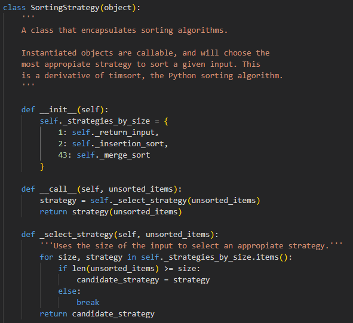
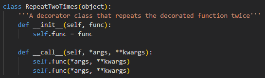
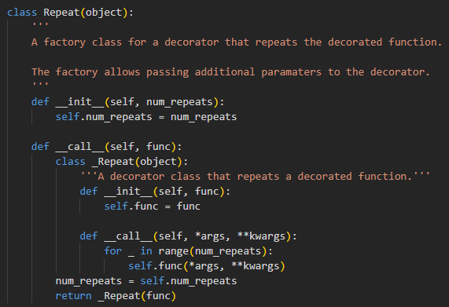

Design Patterns
This is a collection of notes related to design patterns and recommendation systems:
Papers
This is a collection papers that I found interesting, related to design patterns generally:
- Gamma E., Helm, R., Johnson, R. & Vlissides, J. (1995) Design Patterns: Elements of Reusable Object-Oriented Software. 1st ed. Indiana, USA: Addison-Wesley. ISBN 8601419047741 - Gamma et al. present the concept of design patterns, as proven designs to solve reoccuring problems found in software architecture. They catalog 23 examples, which includes for each: a name, a classification, the intent behind them, the mechanism upon which they fufill the intent, a graphical representation and an actual implementation.
- Hasheminejad, S. & Jalili, S. (2012) Design patterns selection: An automatic two-phase method Journal of Systems and Software 85(2): 408-425. DOI. - Hasheminejad and Jalili present a text classification based method for selecting the most appropriate design pattern for a given problem. That includes outlining the preprocessing and model selection steps, and evaluating the selections made by the method. They find that naive bayes, and support vector machine models were most effective.
- Kampffmeyer H. & Zschaler, S. (2007) 'Finding the pattern you need: the design pattern intent ontology'. Model Driven Engineering Languages and Systems. Berlin, 2007. Heidelberg, Germany: Springer-Verlag. 211-225. - Kampffmeyer and Zscahler develop a design pattern intent-based ontology (DPIO) to assist with the selection of design patterns for a project.
- Nilsson, E. (2009) Design patterns for user interface for mobile applications Advances in Engineering Software 40(12): 1318-1328. DOI. - Nilsson presents a collection of design patterns for user interfaces for mobile applications available here, and goes on to share a reception to them.
- Zhang, C. & Budgen, D. (2011) What Do We Know about the Effectiveness of Software Design Patterns? IEEE Transactions on Software Engineering 38(5): 1213-1231. DOI. - Zhang and Budgen conduct an SLR on design pattern research, followed by a mapping study to identify empirical studies of design patterns. They find some explicit evidence that design patterns improve maintainability and education, but only a limited number of studies.
Python Implementations
This section showcases some implementations of design patterns.
The Strategy Pattern
The strategy pattern is a behavioural design pattern that encapsulates the selection of an algorithm for a task during a programme. For my implementation of a strategy class for sorting, see here.
The Decorator Pattern
The decorator pattern is a structural design pattern that allows the dynamic addition of behaviour to an object. Python features a decorator syntax which can be used to wrap functions aswell as objects. For that reason, Python decorators might be disregarded as implementations of the decorator pattern. However, in Python, functions themselves are objects, so it's debatable whether all Python decorators are implementations of the decorator pattern. On some level, a Python decorator on a function, is a callable decorator object wrapping a callable object. In the spirit of both Python, and OOP, you can see my implementation of a decorator class for repeating a function here. If this was truly Pythonic, the decorator would be defined using function syntax. Similarly, if this was truly OOP, the decorator would be wrapping a class defintion. I think this code snippet illustrates a disparity between design and implementation principles, in this case OOD and Python syntax. A software engineer needs to aware of the virtues and costs of competing principles, and choose between them, while an academic should aim to make a reasonable choice possible.
The Factory Pattern
The factory pattern is a creational design pattern that allows the creation of objects without exposing the instantiation logic to the client. This could be to handle temporary components that replace each other for example. In python specifically, factories gain the additional use case of enabling paramaters to be passed to decorators. For my implementation of that idea, see here. To me, this example illustrates how design patterns are more than just implementations. The decision to use paramaterised decorators needs to be made in relation to tangible virtues and costs. I found during my implementation of an autonomous car system, part of this modules' coursework, that using mixin functions within methods was better than using paramaterised decorators to wrap the methods. This was becuase I could pass an instantiated objects' state to a mixin, as the state is available from within a method, but I couldn't pass the objects' state to a paramaterised decorator wrapping a method, as the decorator is called before the method is. Language experience is needed to verify the applicability of design patterns to language specific use cases.
Design Pattern Recommendation Systems
This section showcases some methods for generating design pattern recommendation systems.
Classifiers
A classifier is a model that can be trained to make a prediction as to what category some specific data belongs to. For example, a classifier can try to match natual language inputs, to a design pattern.
Classifiers are supervised machine learning models, that need to be trained on a set of input-output pairs. The algorithms that classifiers use vary but some of the most common examples include:
- Naive Bayesian Classifier which is based on Bayesian probability theory.
- Support Vector Classifier which is based on using hyperplanes to seperate input space.
- Decision Tree Classifier which is based on using comparisons to seperate input space.
- K Nearest Neighbours Classifier which is based on similarity between inputs.
For my implementation of a classifer in Python see here.
To use classifiers with natural language, one technique is to convert text expressions into a long vectors matching the length of an entire lexicon. Then each expression can be one hot encoded into the same shape, for consistency. This is called a bag of words model. For a design pattern recommendation system, a classifier can be trained to map vectors to integers which represent design patterns. This would require a lot of preprocessed training data, and processing power, but Software as a Service (SaaS) providers offer tools that make building classifiers more feasible.
Large Language Models
A Large Language Model (LLM) is an Artificial Intelligence (AI) model that has been trained on large amounts of text, to be able to perform an array of langauge tasks. Out of interest, I asked Chat GPT-4, a trending LLM, to recommend design patterns for some of the scenarios that Gamma et al (1995) use to present the applicability of design patterns. The results are here.
Despite the results, LLM's are not generally reliable sources of information, as they tend to hallucinate information, and they don't always have access to external sources (Peng et al., 2023). Efforts to increase their reliablility include:
- Giving LLM's the capability to search the internet. (Microsoft Bing, 2023).
- Giving LLM's the capability to use computational knowledge engines. (Wolfram Alpha's Plugin, 2023).
- Giving LLM's the capability to generate executable code. (Github Copilot X, 2023).
References
- Peng, B., Galley, M., He, P., Cheng, H., Xie, Y., Hu, Y., Huang, Q., Liden, L, Yu, Z., Chen, W. & Gao, Jianfeng. (2023) Check Your Facts and Try Again: Improving Large Language Models with External Knowledge and Automated Feedback. Columbia University, USA: Microsoft Research. DOI. - Peng et al. present a LLM augmentation system to ground a LLM's responses in an external knowledge system. The system uses automated feedback to refine the prompts used on the LLM.
End of Module Reflection
Before starting this module, I struggled to see the value of design patterns. Design pattern don't fit any measurable scales as easily as algorithms do, so their benefits of design patterns are not immediately obvious or verifiable. I have gained more appreciation for them though.
I note that the benefits of design patterns are usually discursive and organisational ones, and the theory behind them usually has additional educational benefits. So I definitely advocate learning about them, to speed up the acquisition of good decision making. The existence of design patterns is a really good reason to have senior engineers working on a project, as they are more likely to have the foresight to recommend them.
Unfortunately, the problems that design pattens solve are not always problems that traditional design methods uncover, so that can make design patterns difficult to plan for early on. Design patterns are also ontologically elusive, so are not always easy to incorporate later on either. For those reasons, I think value could be gained by refactoring design patterns into parts of larger contextual models, simply to help with the conceptual acquistion of them. I find contextual models more tangible.
A goal of mine for the future is to learn other ways that the space of design patterns can be organised, and test whether different models of design pattern space improve the aquistion of the wisdom inherent to them.
Lastly, I would like to say that I have previous experience building machine learning models, so I took the opportunity to showcase some of that experience in the context of design pattern recommendation systems. I feel that's the best way for me to contribute to the topic of design patterns, and challenge the value of experience in their justification. Large language models for instance can read larger amounts of discourse than humans can. I'm keen to learn about post-AI epistemological models, along with alternative design pattern models.